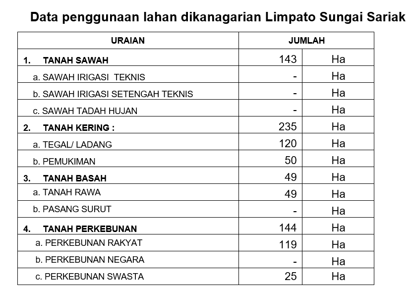
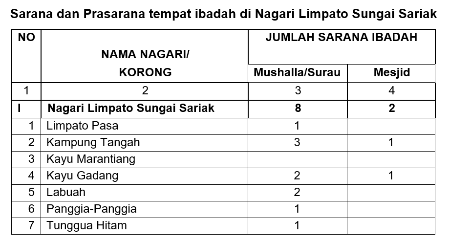
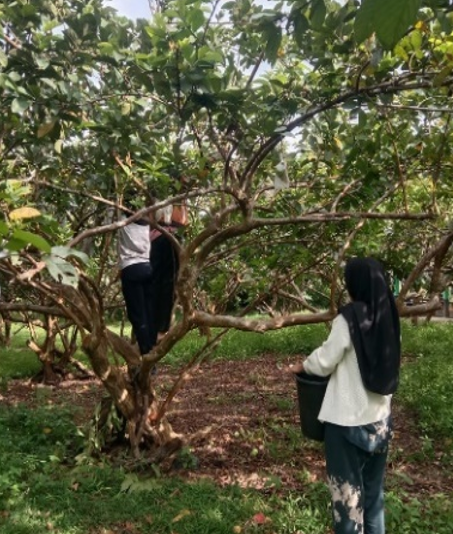

Profile
Asal usul nama Limpato berasal dari sebuah pohon. Menurut cerita pohon ini berdiri ditengah-tengah perkampungan. Daunnya rindang dan buah nya enak dimakan telah menginspirasi para pendahulu untuk menjadikan nama kampung tempat pohon itu tumbuh dengan nama LIMPATO.
Sebelumnya, Limpato adalah sebuah korong yang berada di kenagarian Sungai Sariak dengan nama korong Limpato. Kemudian dengan adanya Perda Kabupaten Padang Pariaman No. 01 tahun 2013 tentang Pembentukan 43 pemerintahan Nagari di Kabupaten Padang Pariaman. Maka, Korong Limpato memekarkan diri menjadi sebuah Nagari, yaitu Nagari Limpato Sungai Sariak.
Luas nagari Limpato Sungai Sariak +- 5 km², dengan batas-batas nagari antara lain :
- a. Sebelah Utara : Nagari Bisati Sungai Sariak
- b. Sebelah Timur : Nagari Koto Tinggi
- c. Sebelah Selatan : Nagari Padang Bintungan Padang Kandang Pulo Aie
- d. Sebelah Barat : Nagari Balah Aie Timur
Nagari Limpato Sungai Sariak berjarak lebih kurang 15 KM dari Ibukota Kabupaten Padang Pariaman merupakan salah satu Nagari baru yang berada di Kecamatan VII Koto yang memiliki penduduk lebih kurang 2.543 jiwa dengan jumlah KK 798 yang tersebar di 7 Korong:
- 1. Korong Limpato Pasa
- 2. Korong Kampuang Tangah
- 3. Korong Kayu Marantiang
- 4. Korong Labuah
- 5. Korong Tunggua Hitam
- 6. Korong Kayu Gadang
- 7. Korong Panggie-Panggie
Sumber Daya Alam

Tanaman Perkebunan
Buah Pala, Kelapa, Pisang, Pinang, Manggis dan Tebu
Volume : 144 Ha
Lahan Persawahan
Volume : 143 Ha
Tanah
Tanah Kering mempunyai volume 235 Ha dan Tanah Basah mempunyai volume 49 Ha
Ekonomi
Yang mendukung perekonomian Nagari Limpato Sungai Sariak secara umum dikelompokkan menjadi 3 yaitu :
- 1. Faktor Alam (Sumber Daya Alam)
- 2. Faktor Manusia (Sumber Daya manusia)
- 3. Faktor Lingkungan Sosial Masyarakat
Dari ketiga faktor tersebut memberikan berbagai kemungkinan atau peluang yang memiliki potensi untuk diolah atau dikelola dan dikembangkan sehingga memberikan keuntungan dari segi ekonomi, peluang akan semakin terbuka apabila faktor kualitas sumberdaya manusia sudah dapat diandalkan, namun pemanfaatan sumberdaya alam harus sesuai dengan konsep pembangunan berwawasan lingkungan. Berikut berbagai potensi ekonomi Nagari Limpato Sungai Sariak :
Sektor Pertanian dan Perkebunan
Luas Nagari Limpato Sungai Sariak 650 Ha dari kondisi topografi yang ada berpengaruh terhadap kehidupan sosial ekonomi masyarakat, dan ketersediaan lahan, penggunaan lahan di Nagari Sungai Sariak didominasi oleh areal pertanian (sawah, ladang), penggunaan lahan tersebut dapat dilihat pada tabel berikut ini:
Berdasarkan data tersebut di atas penggunaan lahan pertanian merupakan sektor andalan Nagari Limpato Sungai Sariak sampai saat ini, hal ini didukung dengan kondisi alam seperti topografi, iklim, curah hujan dan tanah yang sangat mempengaruhi aktifitas pertanian terutama komoditi padi dan sayur-sayuran.
Industri
Industri yang berkembang dikanagarian Limpato Sungai Sariak pada umumnya industri kecil, industri rumah tangga, mebel, dilihat dari perkembangan masing-masing industri yang ada maka konstribusi yang diberikan di kanagarian Limpato Sungai Sariak cukup mendukung jika dikembangkan yaitu industri rumah tangga,dan industri lainya.
Dilihat jumlah unit usaha atau kelompok usaha pada industri rumah tangga, mebel selain pertanian merupakan pekerjaan masyarakat di Nagari Limpato Sungai Sariak. Adapun jenis produk yang dihasilkan dari industri rumah tangga pengolahan makanan adalah Keripik Singkong, Peyek Kacang, Jus Jambu Merah dan lain sebagainya, selain dari segi pengolahan makanan ada juga industri mebel yang menghasilkan lemari, kursi, meja dan lain sebagainya yang diharapkan bisa dipasarkan keluar wilayah Sumatera Barat, selain menghasilkan produk industri ini juga menghasilkan tenaga kerja.
Perdagangan
Di Nagari Limpato Sungai Sariak tidak ada pasar harian maupun mingguan. Masyarakat nagari Limpato Sungai Sariak dalam bidang perdagangan masih melakukan transaksi di Pasar Sungai Sariak atau melakukan jual beli di toko-toko Sayur dan kebutuhan harian yang ada di Nagari Limpato Sungai Sariak. Walaupun demikian setiap bulan Ramadhan di Nagari Limpato Sungai Sariak selalu diadakan Pasar Ternak yang menjual kerbau untuk disembelih pada hari raya.
Pariwisata
Sektor pariwisata merupakan salah satu sektor yang dapat memberikan konstribusi terhadap pertumbuhan ekonomi di Nagari Limpato Sungai Sariak, berbagai objek wisata yang sangat potensial untuk dikembangkan karena didukung oleh keindahan alam dan udara yang sejuk berbagai objek wisata yang dapat dikembangkan yaitu :
- 1. Wisata Pertanian
- 2. Wisata Kuliner
- 3. Wisata lainnya
Adat dan Budaya
Dalam pelaksanaannya secara umum adat minang kabau mengajak kepada masyarakatnya untuk senantiasa bertingkah laku baik dan bermoral mulia, tata kehidupan masyarakat minangkabau didasarkan pada falsafah hidup adat minang kabau yaitu adat basandi syara’, syara’ basandi kitabullah yang mempunyai makna syara’ mangato adat mamakai.
Dalam tata kehidupan masyarakat Nagari Limpato Sungai Sariak selalu memegang teguh ajaran agama dan adat istiadat yang berlaku di nagari. Penyelenggaraan pemerintahan dalam pelaksanaan pembangunan selalu menggunakan jalan musyawarah mufakat setiap pengambilan keputusan dengan melibatkan semua unsur masyarakat yang ada seperti niniak mamak, cadiak pandai, alim ulama, bundo kanduang dan pemuda yang terakomodir dalam wadah lembaga Badan Permusyawaratan Nagari.
Agama
Seiring dengan kebijakan pemerintah propinsi sumatera barat “babaliak Kanagari” di era otonomi daerah, belum mampu diterjemahkan secara konkrit ditengah-tengah kehidupan masyarakat, sehingga muncul kekhawatiran makin luntur dan rendahnya pemahaman agama bagi generasi muda.
Untuk mengantisipasi hal ini, telah dilakukan berbagai langkah dan upaya bagi tokoh masyarakat di Nagari Limpato Sungai sariak untuk membangun mesjid, mushalla dan melakukan kegiatan-kegaiatan keagamaan dengan penyediaan sarana dan prasarana ibadah serta pengembangan kegiatan kegamaan.
Perantau
Salah satu ciri masyarakat Nagari Limpato Sungai Sariak dan telah menjadi kebiasaan sebagaimana budaya masyarakat minangkabau yaitu merantau. Masyarakat Nagari Limpato Sungai Sariak yang merantau lebih didominasi oleh penduduk laki-laki yang berumur 18 tahun s/d 45 tahun dengan kota tujuan yang beragam dan tersebar hampir di seluruh wilayah Indonesia dan bahkan ada yang merantau sampai ke luar negeri.Tujuan anak Nagari Sungai sariak merantau adalah untuk merubah kehidupan yang lebih baik dengan berdagang, menjadi pegawai (instansi swasta/Negeri) dan sebagainya. Bagi anak Nagari Limpato Sungai Sariak yang berhasil di perantauan mereka memberikan konstribusi terhadap pembangunan kampung halaman baik berupa bantuan moril maupun materil.
Objek Wisata
Agrowisata Kebun Jambu Biji
Lokasi kebun jambu biji ini terletak agak ke dalam perkampungan, sedikit sulit ditemukan namun akses jalan untuk ke lokasi mudah dilalui. Kebun jambu biji tersebut lumayan luas, sekiranya dapat menjadi daya tarik wisatawan karena wisatawan dapat memanen jambu biji sendiri secara langsung.